The Case of Focșani Municipality (1990–2025)
Multi-indicator spatio-temporal analysis combining NDVI, NDBI, land surface temperature and population density to evaluate how urban expansion in Focșani has reshaped green infrastructure and the urban microclimate over more than three decades.
Green spaces and vegetation play an essential ecological, economic, psychological, social and aesthetic role, closely linked to urban well-being. As built-up areas expand, vegetated surfaces shrink, threatening sustainability and quality of life. This research uses Geographic Information Systems to examine how urban expansion in Focșani Municipality and its ten neighbouring administrative units has influenced the distribution and continuity of green infrastructure between 1990 and 2025.
Focșani Municipality & 10 neighbouring localities
1990–2025
Sentinel-2, Landsat 8/9, GHS-POP
NDVI, NDBI, LST, PD, Google Earth Engine
Study area
Focșani Municipality lies within Vrancea County, at the contact zone between the Sub-Carpathians and the Romanian Plain. The administrative area also includes ten neighbouring localities: Odobești, Vânători, Cîmpineanca, Vârteșcoiu, Golești, Rastoaca, Milcovul, Slobozia Ciorăști, Cotești and Cârligele, which are analysed together to capture the broader dynamics of urban expansion around the municipality.
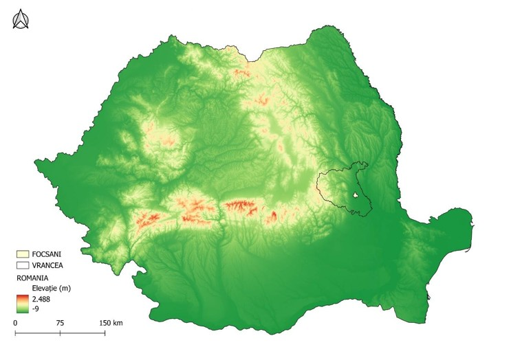
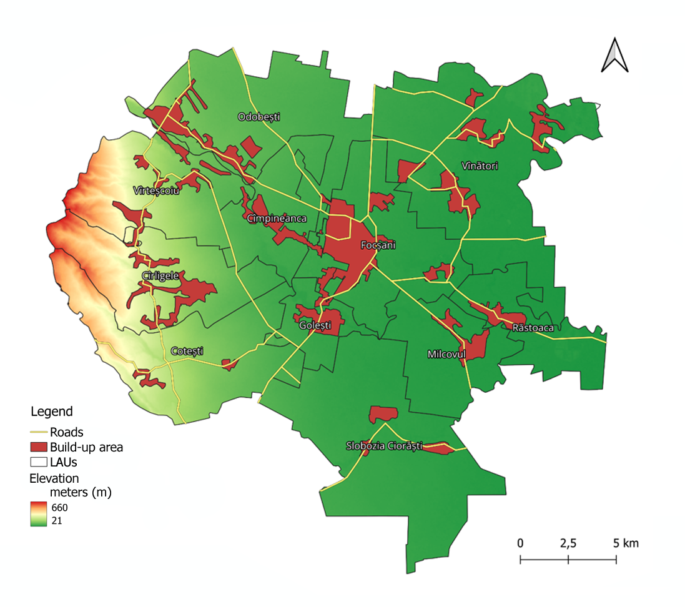
Methodology
Four indicators were derived from three satellite data sources and processed across Google Earth Engine, QGIS and ArcGIS Pro to evaluate the spatial correlation between vegetation, built-up expansion, surface temperature and population density.
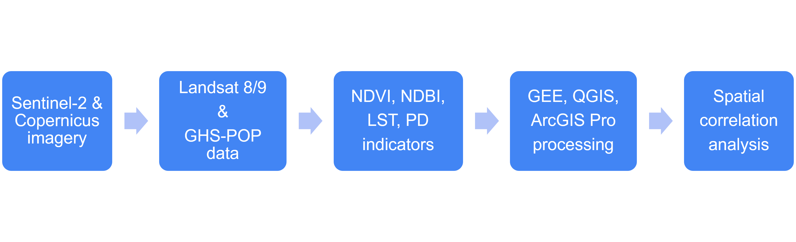
Sentinel-2 imagery was used to calculate NDVI as an indicator of vegetated areas, and Copernicus data to calculate NDBI as an indicator of built-up areas. Landsat 8/9 imagery was used to estimate land surface temperature (LST), and GHS-POP data to determine population density (PD). The spatial correlation between NDVI and NDBI, LST and PD was then evaluated to highlight the influence of built-up area expansion on vegetation and the urban microclimate.
Spatio-temporal dynamics
Between 1995 and 2025, Focșani Municipality recorded a marked imbalance between built-up expansion and green space growth, alongside a significant population decline.
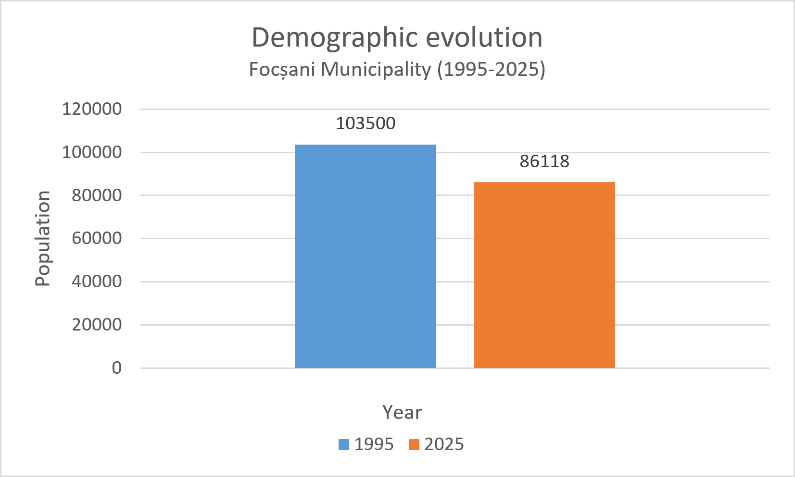
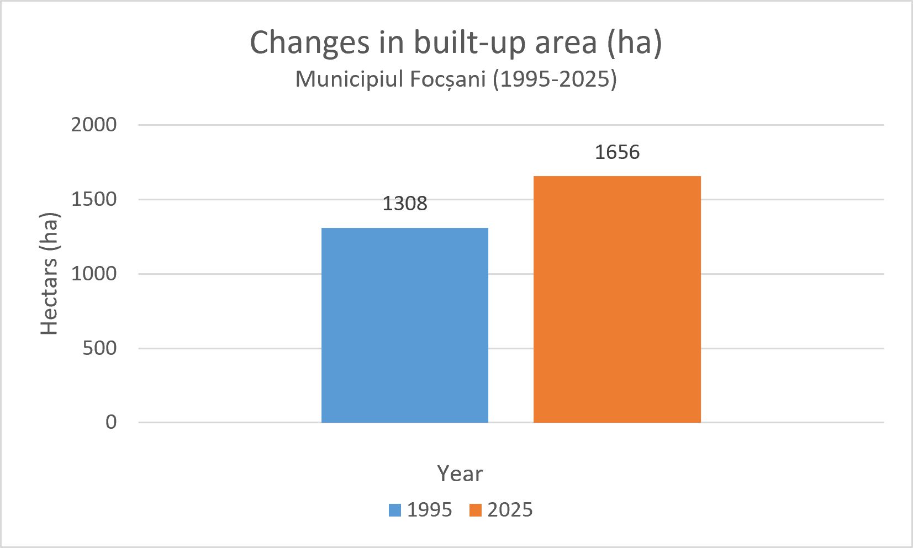
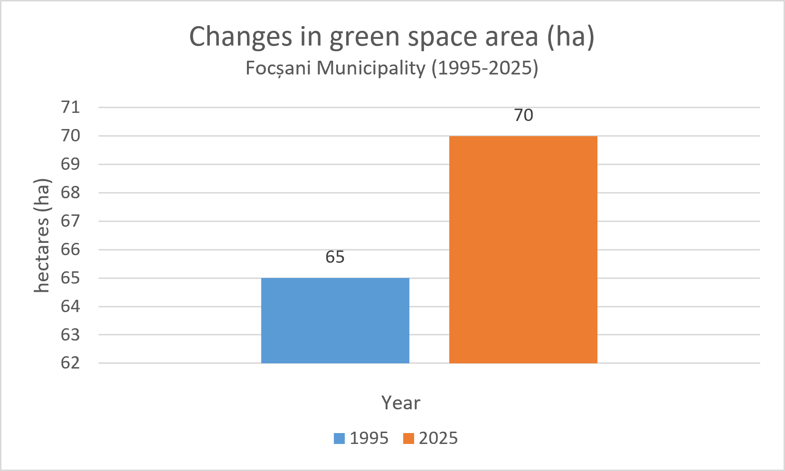
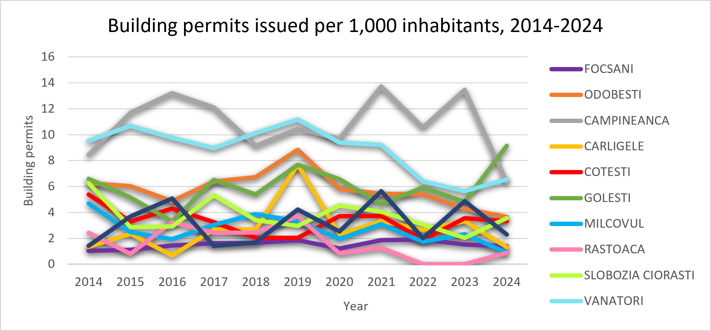
Built-up areas grew by +26.61%, green spaces grew by only +7.69%, while population fell by -16.80%, a widening gap between urban expansion and green infrastructure growth.
Source: INS.
Results
Change was calculated as a simple raster difference: ΔNDBI = NDBI2025 − NDBI1990.
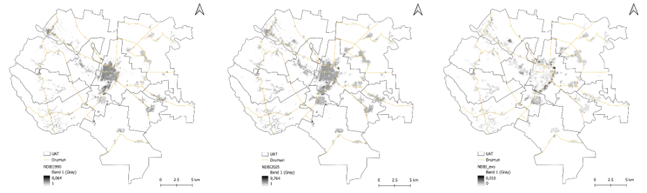
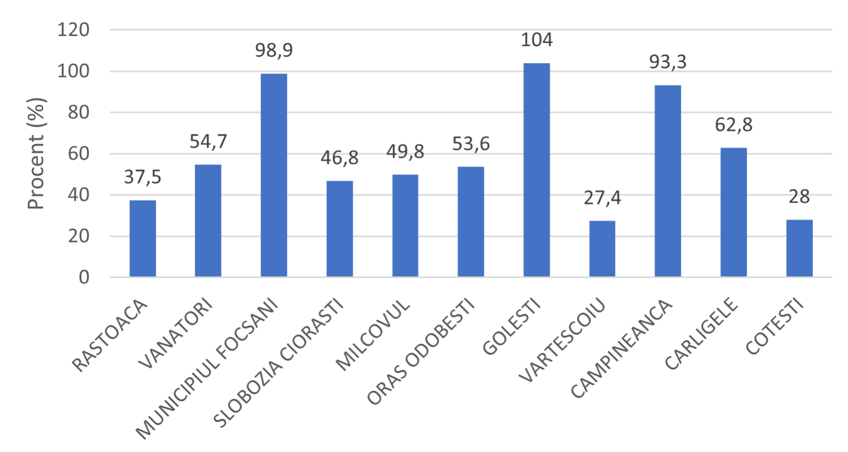
Between 1990 and 2025, the NDBI index recorded a total increase of 59.1% across the analysed units, reflecting an intensification of urbanization. The raster difference highlights the areas of most pronounced expansion, particularly near urban centers and along major infrastructure corridors.
Results
GHS-POP data for Focșani and its ten neighbouring localities were compared between 1990 and 2025 to trace population redistribution across the study area.
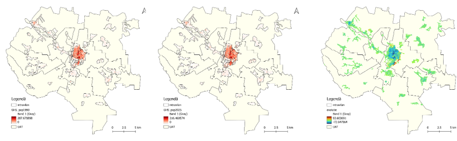
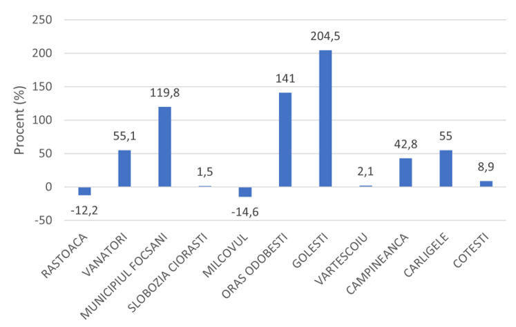
The raster difference highlights a migration trend from the city center toward peripheral areas, reflecting a process of suburbanization. Golești (+204.5%) and Focșani Municipality (+119.8%) recorded the largest population gains, while Rastoaca (-12.2%) and Milcovul (-14.6%) declined.
Results
Change was calculated as a simple raster difference: ΔNDVI = NDVI2024 − NDVI2015.
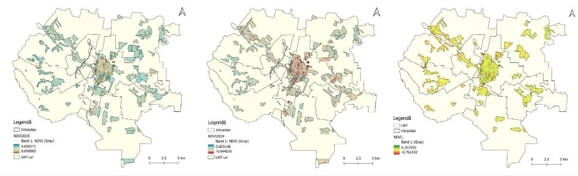
Between 2015 and 2024, NDVI recorded a significant decrease: the maximum vegetation index value dropped by approximately 0.25 units (≈29%), and the difference raster shows a predominance of negative values, down to -0.6, indicating a clear reduction in vegetation density and health.
Results
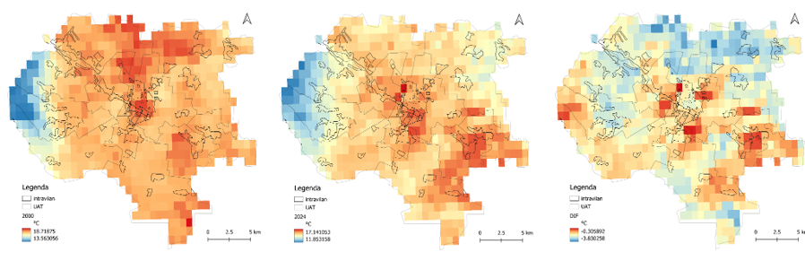
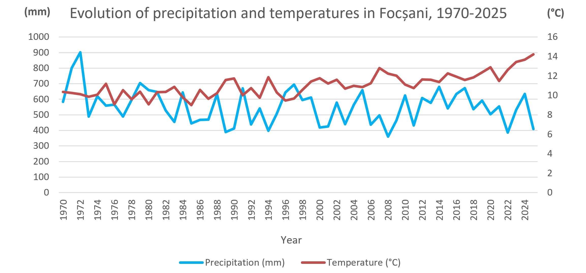
Between 2000 and 2024, the annual average temperature increased by approximately +2°C while annual precipitation decreased by 10%, reflecting a trend toward aridification. The resulting raster indicates a decrease of up to 3.8°C in certain areas, while the center of Focșani displays minimal change (0.38°C).
Multivariate analysis
A grouping (clustering) analysis integrated NDVI, LST, NDBI and PD values, classifying the study area into four typologies.
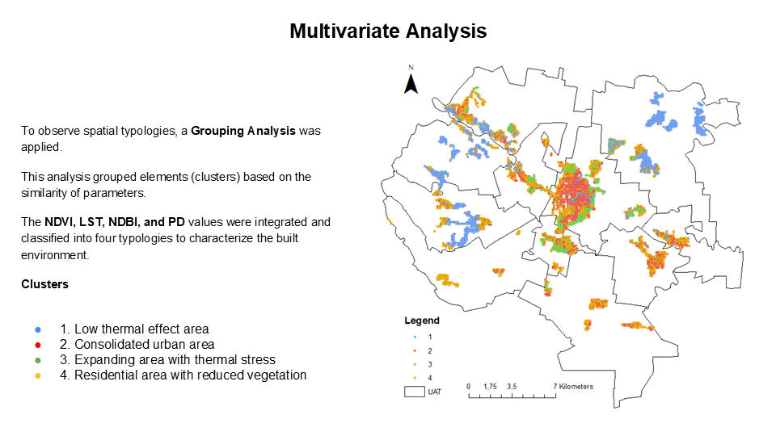
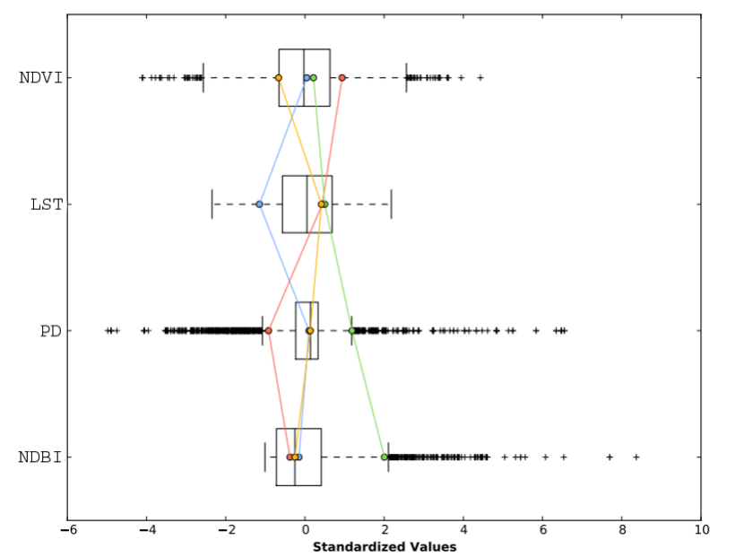
Key findings
Conclusion
The study demonstrates the usefulness of integrating remotely-sensed indices (NDVI, NDBI, LST, PD) for analyzing urban spatio-temporal relationships within a GIS environment. Green areas decreased significantly between 1990 and 2025 due to urban expansion as well as the pedological drought during 2020–2022, and human pressure continues to affect the urban environment and quality of life. A significant imbalance is observed between green and built-up areas, highlighting the need to expand green spaces. The main driver of built-up expansion and, consequently, the reduction of green surfaces is the road network; the development of the A7 Motorway is expected to intensify this dynamic in the coming years by increasing accessibility and stimulating investment in adjacent zones.